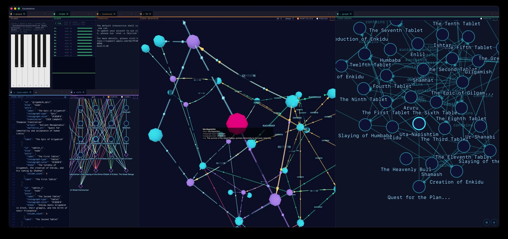

A cross-platform desktop workspace built on Tauri 2 and Dockview. Structure you operate inside while you work — not a tool you switch to; a chassis your tools live in.

Three synced graph layouts of the same Gilgamesh-epic dataset. A node selected in the 3D force graph (center) lights up simultaneously in the 2D graph panel (right) — synchronized by identity, not position.
Run 2D force, Cytoscape/fCose, and 3D force layouts of the same data simultaneously. Hover or click a node in one panel and every other panel highlights and flies to it — each in its own coordinate space.
Markdown editor, real-shell terminal, web viewport, seven JSON visualizers (tree, circles, mass, Cytoscape, 2D/3D graphs, dyadic), tempo clock, piano synth, oscilloscope, and more.
Drag, dock, tab, split, resize, and pop out panels into separate OS windows. Four layout presets — Minimal, JSON Lab, AV Lab, Everything — with one-click switching.
Create, rename, and switch between named workspaces. Export/import standalone .exo.json documents. Open independent workspaces in separate windows.
CSP-compliant — no CDN fetches, no remote fonts, no analytics. Everything runs locally. AGPL-3.0-or-later licensed.
Panel error boundaries catch uncaught JS errors without crashing the workspace. Debounced persistence auto-saves on every state change and window close. 40/40 tests passing.
Grab the build for your platform from the Releases page.
Not code-signed yet. After installing the .app, clear quarantine once:
xattr -dr com.apple.quarantine /Applications/Exoskeleton.app
Make executable and run:
chmod +x Exoskeleton_*.AppImage && ./Exoskeleton_*.AppImage
| Concern | Choice |
|---|---|
| Shell / Window | Tauri 2 (Rust) |
| UI Framework | React 19 + TypeScript |
| Layout / Docking | Dockview 6 |
| Code Editor | CodeMirror 6 |
| Terminal | xterm.js v6 + tauri-plugin-pty |
| 3D Graphs | Three.js |
| License | AGPL-3.0-or-later |